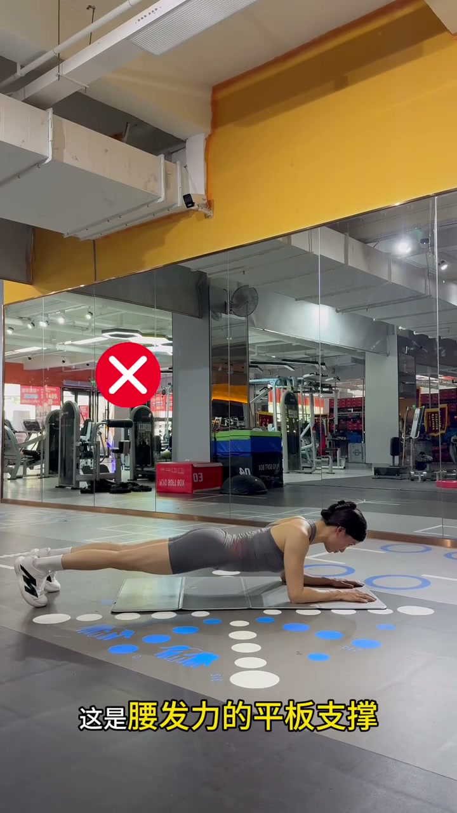
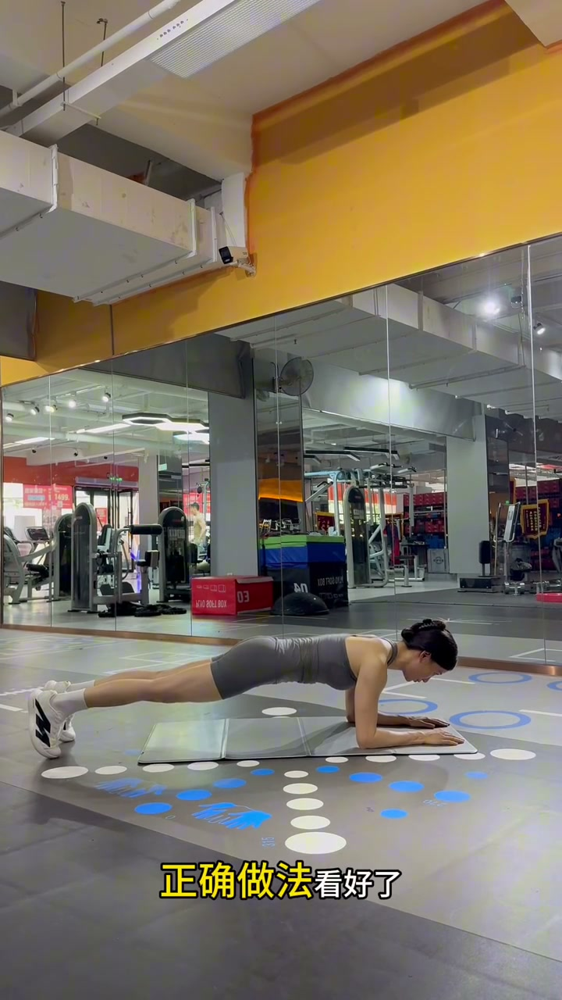
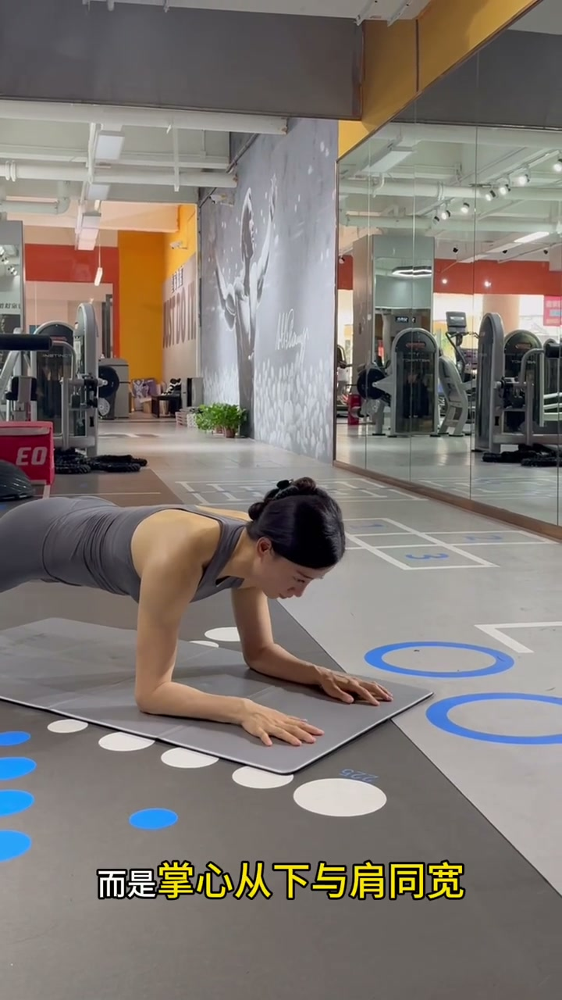
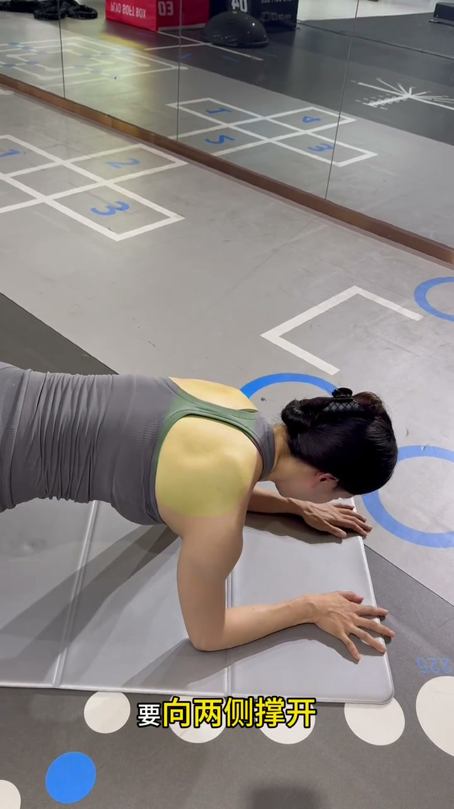

01
中文
手掌不是抱拳，而是掌心朝下，与肩同宽。
EN
Don't make fists — place your palms flat, shoulder-width apart.
表达提示palms flat（掌心朝下）；shoulder-width apart（与肩同宽）

Scene English · 健身教学 · 核心训练
Plank Details | How to Avoid Lower-Back Pain and Engage Your Core
🎧 语音讲解
Palms and Shoulder Blades
情境正确平板支撑先看手掌：不是抱拳，而是掌心朝下与肩同宽；肩胛骨不是夹着，要向两侧撑开。语域：健身教学，纠错口令。
手掌不是抱拳，而是掌心朝下，与肩同宽。
Don't make fists — place your palms flat, shoulder-width apart.
表达提示palms flat（掌心朝下）；shoulder-width apart（与肩同宽）
肩胛骨不是夹着，要向两侧撑开。
Don't pinch your shoulder blades together — spread them outward.
表达提示pinch together（夹着）；spread outward（向两侧撑开）
这是腰发力的平板支撑。
This is a plank that engages your lower back instead of your abs.
表达提示engage（发力）；lower back（腰部）
掌心朝下 → palms flat / palms facing down
撑开肩胛 → spread the shoulder blades / open the shoulder blades

Neutral Neck
情境头部不要后仰，要保持颈部中立，让头、颈、背在一条直线上。语域：健身教学，细节纠错。
头不要后仰。
Don't let your head tip back.
表达提示tip back（后仰）
要保持颈部中立。
Keep your neck neutral.
表达提示neutral neck（颈部中立）
头、颈、背在一条直线上。
Keep your head, neck, and back in one straight line.
表达提示in one straight line（一条直线）
颈部中立 → neutral neck / spine in line
一条直线 → one straight line / aligned

Core Tight, Slight Arch
情境腰不是向下塌，要腹部收紧、略微向上拱起，让腹肌真正参与发力，避免腰酸。语域：健身教学，发力讲解。
腰不是向下塌，要腹收紧。
Don't let your lower back sag — tighten your abs.
表达提示sag（下塌）；tighten your abs（收紧腹部）
略微向上拱起。
Slightly round your back upward.
表达提示round upward（向上拱起）
这才是腹发力的平板支撑。
This is how you make the plank work your abs.
表达提示work your abs（练到腹）
下塌 → sag / collapse down
向上拱 → round upward / arch slightly

Feet and Summary
情境双脚不是并一起，而是打开与髋同宽，更稳定。掌握以上细节，做的平板支撑才能发力在腹上。语域：健身教学，收尾总结。
双脚不是并一起，而是打开与髋同宽。
Don't keep your feet together — spread them hip-width apart.
表达提示hip-width apart（与髋同宽）
掌握以上细节。
Master all these details.
表达提示master the details（掌握细节）
做的平板支撑，才能发力在腹上。
Only then will your plank actually engage your core.
表达提示engage your core（核心发力）
与髋同宽 → hip-width apart / as wide as your hips
核心发力 → engage your core / activate the abs
教手掌姿势
教颈部中立
教腹部发力
说双脚宽度
「抱拳」用 make fists（握拳），不是 hands into fist。
夹肩胛是错误示范；正确是 spread outward（向两侧撑开）。
腰下塌是错误；用 sag（下塌）表达纠正。
双脚并拢不稳，正确是 hip-width apart。